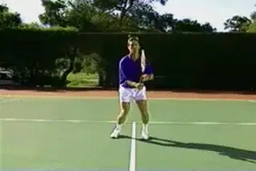
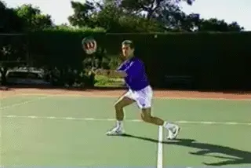
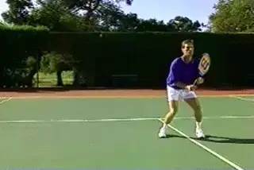
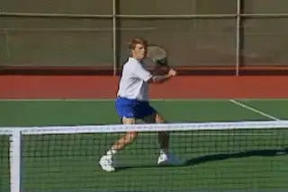

Court Movement: The Volley¶
Bob Hansen¶
As in the backcourt, good movement at the net begins with the Initial Move on both the forehand and backhand volley. The Initial Move at the net is similar to the ground strokes. Let's look at the forehand first.
| Initial Move: Forehand | |
|---|---|
| On the forehand, the Initial | |
| Move starts with the feet: a | |
| push with the Inside Foot and | |
| a step with the Outside Foot | |
| to the ball. | |
| As we saw with the | |
| groundstrokes, the Outside | |
| Foot is the left foot, closer | |
| to the ball (for a right | |
| hander). | |
| The Inside Foot away from the | |
| ball is the left. The only | |
| real difference compared with | |
| the forehand groundstroke is | |
| that the shoulder turn is | |
| slightly shorter. |
+-------------------------------------------------------------------------------------------------------------------------------------------------------------------------+ | |

| | | | | | The forehand volley starts with a push with the Inside Foot, a step with the Outside Foot, and the shoulder turn to the ball. | | | | Stances | | | | | | Now the player is ready to | | | hit. He can step into the line | | | of the shot with my front | | | foot. He can also hit from | | | this balanced, initial turn | | | position. | | | | | | Watch the top pros and see | | | that they frequently hit their | | | volleys with this open stance | | | positioning. |+-------------------------------------------------------------------------------------------------------------------------------------------------------------------------+ | |

| | | | | | From the Initial Move, the player is balanced and ready to hit open or closed. | | | | The Lunge Step | | | | | | On a wider ball, you | | | simply increase the length of | | | the first step to get behind | | | the ball. If necessary, you | | | can also take a lunging step | | | to the ball with the front | | | foot. | | | | | | Notice how much ground I can | | | cover with just two steps: the | | | longer step in the initial | | | move and the lunge step. I | | | stay balanced, and I also | | | continue to move forward | | | toward the net on a diagonal | | | to cut off the oncoming | | | ball. |+-------------------------------------------------------------------------------------------------------------------------------------------------------------------------+ | |

| | | | | | On wider balls, increase the length of the first step and add a lunge step if necessary. | | | | The recovery exchange also |
| | follows the same pattern as |
| To recover the Inside Foot replaces the Outside Foot as I return to the ready position. | the groundstrokes. Watch how I |
| | exchange my feet and return to |
| | the ready position. |
| | |
| | This allows me to move either |
| | way from my opponent's next |
| | ball. |
| | |
| | The efficiency of this |
| | recovery pattern is probably |
| | even more important at the net |
| | than in the backcourt, because |
| | of the reduced time between |
| | shots. |
| The recovery exchange also |
| | follows the same pattern as |
| To recover the Inside Foot replaces the Outside Foot as I return to the ready position. | the groundstrokes. Watch how I |
| | exchange my feet and return to |
| | the ready position. |
| | |
| | This allows me to move either |
| | way from my opponent's next |
| | ball. |
| | |
| | The efficiency of this |
| | recovery pattern is probably |
| | even more important at the net |
| | than in the backcourt, because |
| | of the reduced time between |
| | shots. |
+-------------------------------------------------------------------------------------------------------------------------------------------------------------------------+ | | | | | --- | --- | | | Backhand Volley | | | | | | Now let's look at the sequence | | | of the hit and the recovery on | | | the backhand volley. | | | | | | The pattern and sequence | | | should start to seem familiar | | | at this point, with the same | | | elements as the groundstrokes | | | and forehand volley. | | | | | | Again, the Components are: | | | | | | - The Initial Move | | | | | | - The Step to the Ball | | | | | | - The Recovery Exchange | | | | | | Watch in the animation how I | | | exchange the Outside Foot and | | | the Inside Foot to begin the | | | recovery. |
+-------------------------------------------------------------------------------------------------------------------------------------------------------------------------+ |
|  | |
| | |
| The Initial Move, the hit, and the recovery on the Backhand Volley. | |
| | Open Stance |
| | |
| | Again, I have the option of |
| | hitting off the front foot or |
| | hitting open stance. |
| | |
| | To reach wider balls, as on |
| | the forehand, I can increase |
| | the size of my first step and |
| | add a lunge step if necessary. |
| | |
| | Next, we'll look at how to |
| | speed up our first move, our |
| | overall movement in the |
| | transition to the net, and |
| | especially the return of |
| | serve. |
| |
| | |
| The Initial Move, the hit, and the recovery on the Backhand Volley. | |
| | Open Stance |
| | |
| | Again, I have the option of |
| | hitting off the front foot or |
| | hitting open stance. |
| | |
| | To reach wider balls, as on |
| | the forehand, I can increase |
| | the size of my first step and |
| | add a lunge step if necessary. |
| | |
| | Next, we'll look at how to |
| | speed up our first move, our |
| | overall movement in the |
| | transition to the net, and |
| | especially the return of |
| | serve. |
+-------------------------------------------------------------------------------------------------------------------------------------------------------------------------+ | |

| | | | | | In fast exchanges you can hit the backhand volley open stance after the Initial Move. | |Bob Hansen is the long time men varsity coach at the University of California at Santa Cruz, where he has lead his beloved Banana Slugs to 4 NCAA Division 3 national titles.
He is also the director of the Nike Tennis Camp at Santa Cruz, where he has helped develop hundreds of high school and ranked junior players. Hansen's innovative theories of court movement were ahead of the curve in tennis coaching, and are widely recognized as an important contribution to understanding footwork in the modern game.